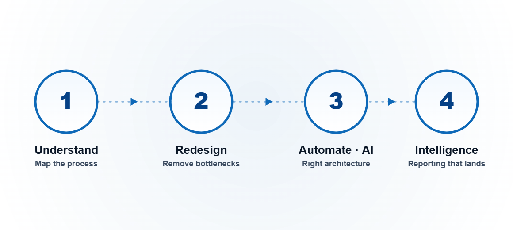

We start by understanding how your business actually runs — then redesign it, automate the right parts, architect it properly, and deliver the intelligence that drives decisions. Process first. Technology second. Always.

We map how your organisation actually works, end to end — every workflow, handoff, system and decision point — and find where time, money and quality are leaking.
We redesign or retrofit those processes to lift efficiency and remove bottlenecks — fixing the business logic in the process itself, not patching over it with software.
We apply automation and AI where they compound value, and design the correct data and platform architecture to support it — built on a process that already works, not a broken one.
We build the business intelligence solution on governed data — Microsoft Fabric and Power BI — and deliver reporting that actually lands with the people making decisions.
Tell us about a process that's costing you time, money or accuracy — we'll map it and come back with a plan.